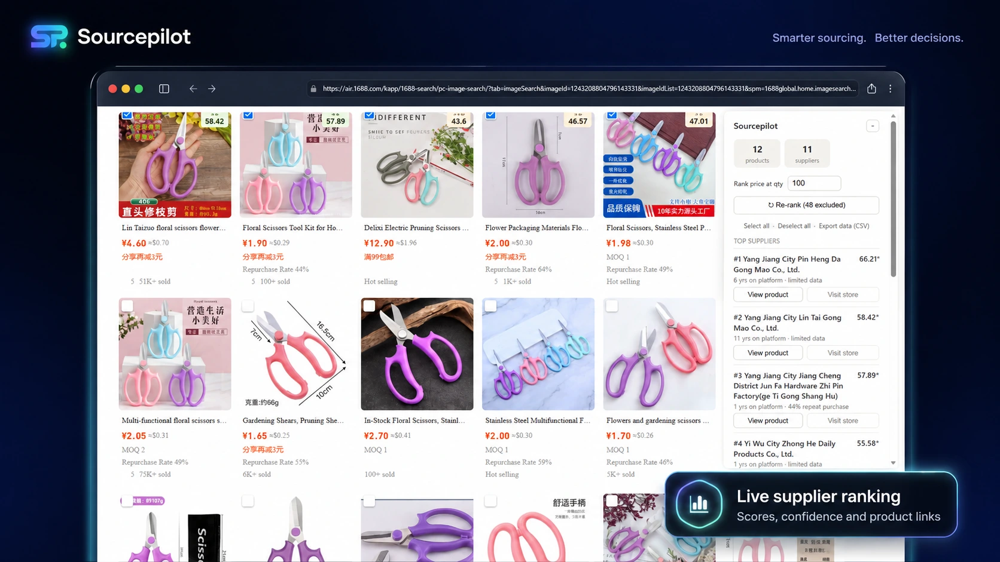

✓
Select only relevant listings
Checkboxes appear on product cards so irrelevant styles, materials or offers can be excluded before ranking.
Sourcepilot compares suppliers using pricing, ratings, seller tenure, repeat-purchase signals, business information and marketplace verification—directly on the Alibaba and 1688 pages you already use.

Sourcepilot gathers marketplace data, ranks suppliers, and keeps the result attached to the page you are researching.
Choose relevant listings, set the ranking quantity, and review the strongest suppliers in one movable panel.
The highlighted areas show the actual Alibaba product and seller signals Sourcepilot collects before calculating its Alibaba-specific supplier ranking.
Export the underlying data to Excel or Google Sheets so you can filter, audit, share and preserve your sourcing work.
Sourcepilot turns marketplace data into a structured shortlist while keeping you in control of which products are compared.
Checkboxes appear on product cards so irrelevant styles, materials or offers can be excluded before ranking.
Use the price tier applicable to your planned order quantity instead of blindly selecting the lowest advertised variation.
Multiple products from the same seller are consolidated so one supplier does not dominate the shortlist through duplicate listings.
Alibaba and 1688 use independent extraction, ranking factors and export fields instead of forcing both marketplaces into one model.
When a marketplace asks for CAPTCHA or browser verification, scanning pauses so you can complete it manually before restarting.
Pro users can download rankings and the supporting supplier data for permanent comparison, audit and team sharing.
Open an Alibaba or 1688 keyword or image-search results page as you normally would.
Keep the products that match your requirement, choose the order quantity, and run the ranking.
Inspect top suppliers in the panel, visit stores, or export the complete comparison file on Pro.
Sourcepilot uses available marketplace evidence and displays score confidence when data is incomplete.
Weights differ by marketplace because Alibaba and 1688 expose different supplier signals.
Uses supplier and product data available across Alibaba pages and embedded marketplace information.
Uses 1688-specific factory, merchant and repeat-purchase signals without mixing Alibaba fields into the calculation.
Score confidence reflects how much weighted supplier information was available for the comparison, helping you distinguish a strong evidence-backed score from a partial-data result.
Test the complete Pro workflow for seven days before choosing a plan.
For individual buyers who need reliable rankings during regular product research.
For serious sourcing research, ongoing comparisons and permanent supplier records.
One payment for buyers who want permanent access to the current Sourcepilot product.
Launch discounts compare against the stated regular prices that Sourcepilot intends to charge after the launch promotion. Taxes may be added by the payment provider where required.
Sourcepilot began as a practical solution to a familiar sourcing problem: opening product after product, copying scattered supplier information, and trying to compare businesses that present data differently across Alibaba and 1688.
The extension was built to collect those signals, keep Alibaba and 1688 logic independent, and turn selected listings into a structured shortlist. It does not promise that a score can replace supplier communication, samples or commercial checks. It is designed to make the first stage of supplier research faster and more evidence-based.
No. Sourcepilot creates a comparative shortlist from marketplace data that was available during the scan. Buyers should still contact suppliers, verify claims, order samples and complete their own commercial due diligence.
No. Alibaba and 1688 expose different supplier fields, so Sourcepilot keeps their extraction, ranking and CSV export logic separate.
Sourcepilot does not bypass verification. Scanning pauses, the affected page remains available, and you can complete the marketplace verification manually before restarting the ranking process.
The CSV contains the supplier intelligence behind the final rank: prices, ratings, tenure, business type, marketplace status, repeat-purchase data, confidence and source links. It lets you audit the comparison, keep permanent sourcing records and share research outside the browser.
Score Confidence shows how much of the weighted ranking data was actually available for that supplier. A lower-confidence result may still be useful, but it should be reviewed more carefully.
No. Sourcepilot is an independent browser extension and is not endorsed by, operated by or affiliated with Alibaba.com or 1688.com.
Sourcepilot is designed for Chromium-based browsers. Publish the exact Chrome Web Store compatibility list here once your final store listing is approved.
Use up to 50 ranking sessions with all Pro features before choosing Starter, Pro or Founder Lifetime.